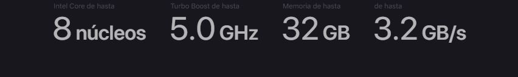

Es un computador portatil que está basado en los procesadores Intel Core 2 Duo (de hasta 2,66 GHz)
procesadores Intel Core i5 e Intel Core i7, incluye una videocámara iSight, ahora llamada "FaceTime HD",
eclado retroiluminado, sensor de iluminación (el cual controla el brillo de la pantalla y el teclado),
la pantalla retroiluminada por LED y además tiene nuevas funciones como conector MagSafe. Todas sus
variantes incluyen sensores de caída libre (los cuales retiran la aguja de escritura del disco duro en
caso que el equipo se caiga). A agosto de 2014, el sistema operativo incluido es Mac OS X v10.9
Maverick,
aunque en otoño de 2014 se comercializará Mac OS X 10.10 Yosemite, con un cambio completamente de diseño
y prestaciones. Los MacBook Pro posteriores a junio de 2009 hacen uso de tecnología amigable con el
medio
ambiente:1 cristal sin arsénico, ausencia de retardantes de llama bromados, pantalla sin mercurio
retroiluminada por LED, cables internos sin PVC, carcasa de aluminio y cristal reciclable en su mayor
parte,
al igual que se ha reducido el embalaje. Están a conformidad con la norma Energy Star (versión 5.0) y
obtuvieron la Certificación Gold de EPEAT.
Touch Bar
Crea atajos directamente en la tira de controles y en apps como Mail, Pages, Safari y Final Cut Pro X
para que puedas trabajar más rápido y mejor.
Muchas de las apps integradas de tu MacBook Pro tienen controles en el Touch Bar para facilitarte aún más
las cosas que haces con más frecuencia, como enviar un email o darle formato a un documento. El Touch
Bar
cambia automáticamente según la app que estés usando y te muestra los atajos que necesitas, cuando los
necesitas. Las apps de terceros también pueden aprovechar las posibilidades del Touch Bar.
Pantalla
La pantalla Retina de la MacBook Pro es la mejor de todas las notebooks Mac. Cuenta con una
retroiluminación
LED brillante y un alto contraste, lo que se traduce en negros intensos y blancos luminosos. Es
compatible
con la amplia gama de colores P3, que ofrece tonos verdes y rojos mucho más vibrantes que el estándar
sRGB.
Además, todas las MacBook Pro incluyen la tecnología True Tone: el balance de blancos se ajusta
automáticamente
a la temperatura del color de la luz ambiental para que todo se vea más natural. La MacBook Pro tiene un
sonido
dinámico que brinda mucha más amplitud de lo que sus dimensiones físicas permitirían imaginar. Las
películas
son más envolventes y la música inunda la sala. Además, los tres micrófonos integrados forman haces
direccionales que capturan tu voz con mayor claridad cuando hablas por FaceTime.
Rendimiento
La MacBook Pro lleva el rendimiento y la portabilidad de la notebook a otro nivel. Con procesadores y
memoria de alto rendimiento, gráficos avanzados, almacenamiento ultrarrápido y mucho más, podrás darle
vida a tus ideas más rápido que nunca.

Procesador
Gracias a los procesadores Intel Core de última generación, la MacBook Pro alcanza un nuevo nivel de
rendimiento. El modelo de 15 pulgadas ahora viene con un procesador Intel Core i9 de 8 núcleos de novena
generación que alcanza velocidades Turbo Boost de hasta 5.0 GHz. Con este procesador, la renderización
de apps con gráficos 3D como Autodesk Maya es hasta un 40% más rápida que con el procesador de 6 núcleos
de la generación anterior, y hasta el doble de rápida si se compara con un procesador de 4 núcleos.2 Y
la MacBook Pro de 13 pulgadas incluye un nuevo procesador de 4 núcleos de octava generación, para
ayudarte con las tareas más difíciles. Ahora, cuando hagas trabajos más complejos, como compilar código,
renderizar modelos 3D, agregar efectos especiales, combinar varias pistas o codificar videos, todo será
más rápido.
Graficos
La MacBook Pro de 15 pulgadas incorpora un GPU independiente Radeon Pro con una potencia increíble y una
eficiencia energética extraordinaria. Además, combinamos cada GPU independiente con 4 GB de memoria
GDDR5 estándar para brindarte un rendimiento fluido en tiempo real en las tareas más complejas, como la
renderización de títulos 3D en Final Cut Pro X. Por su parte, el modelo de 13 pulgadas tiene un potente
procesador gráfico integrado con 128 MB de memoria DRAM, el doble de la generación anterior, que acelera
las tareas con recursos gráficos. Así tendrás más tiempo para hacer lo más importante: un trabajo
increíble.